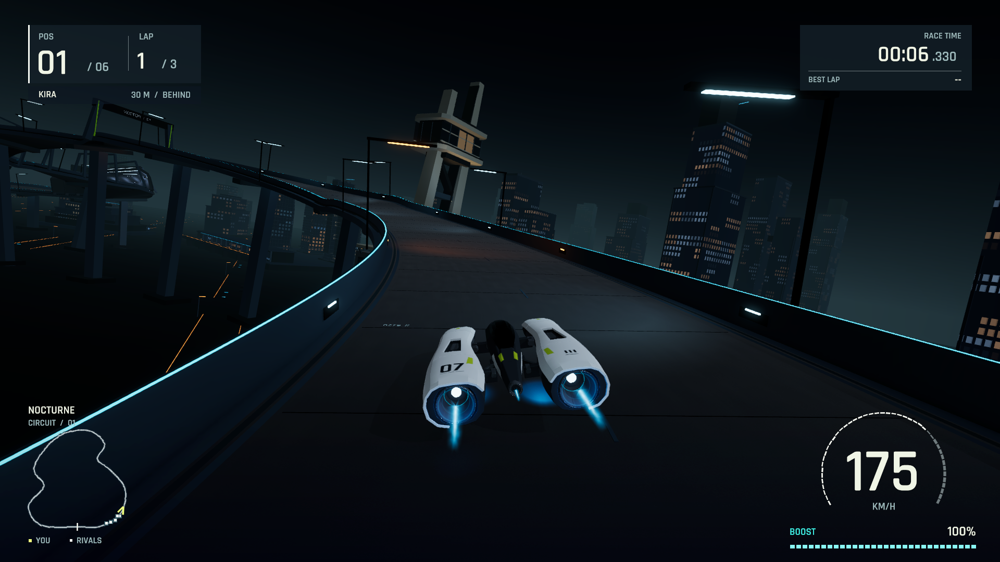
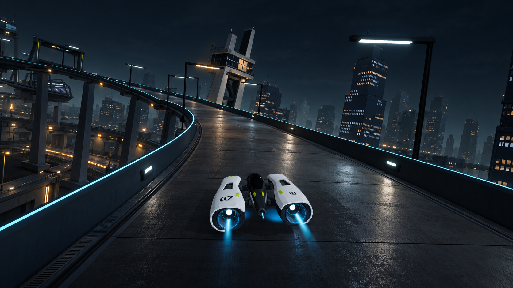
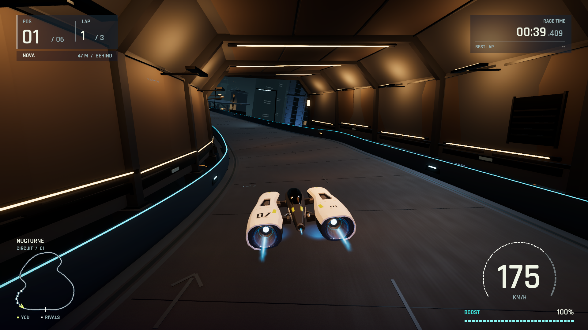
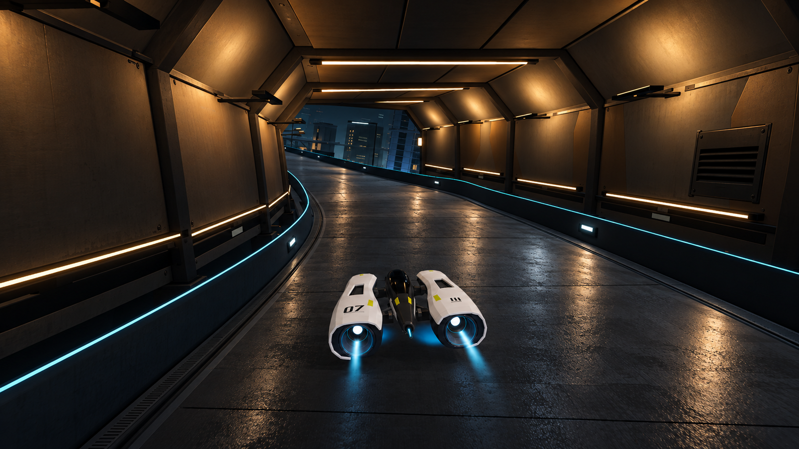
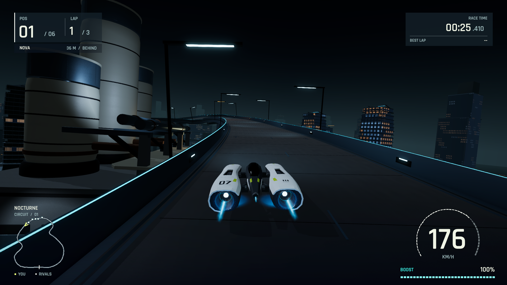
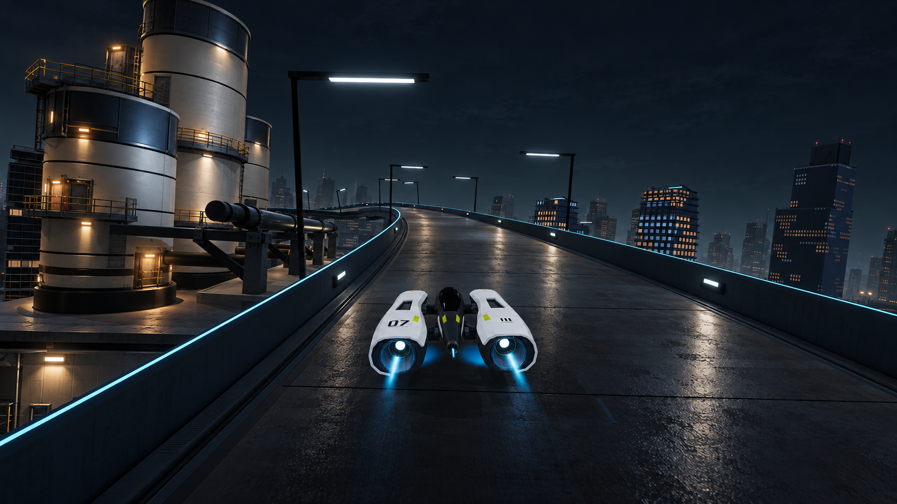
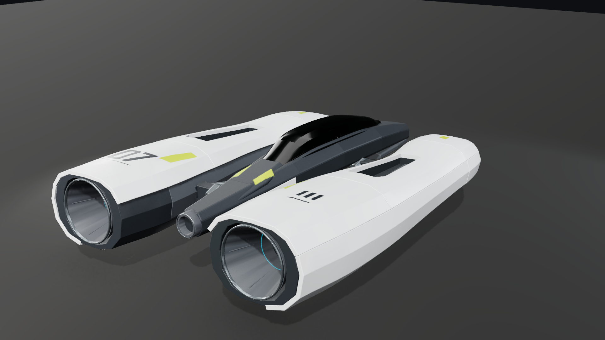
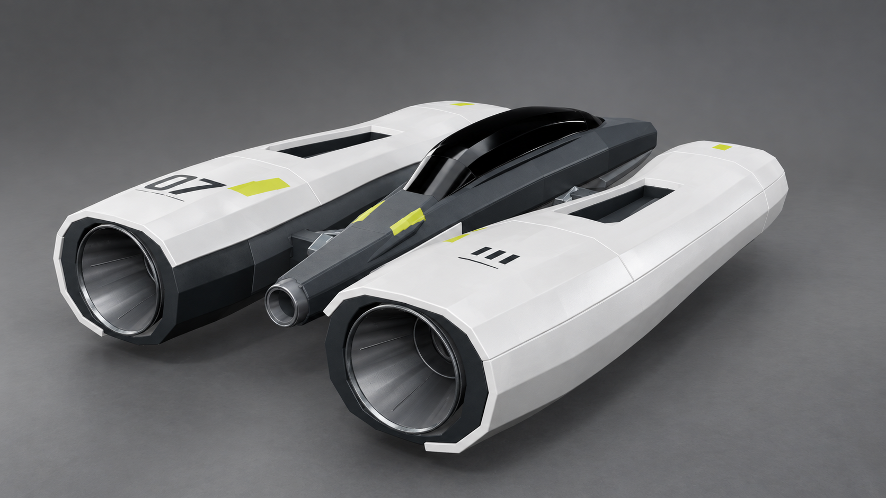

One world.
Four consistent targets.
The current circuit and Kestrel craft, developed into a shared visual direction. Compare original native captures with generated targets for the opening bend, amber gallery, thermal passage, and craft finish.
Full evaluation / Exact prompts / Image provenance / Current handoff
The largest gap is the relationship between road, light, and surrounding construction. The craft already has the intended identity. Its finish needs refinement; the exterior needs more substantial visual development.
Targets are appearance proposals. They do not establish an implemented renderer, a frame budget, or game acceptance. Native A–C come from the restored current control; D uses a historical geometry inspection.
Connect the road to its city.

Frame 149 · 6.330 s · Original 1920 × 1080Open PNG ↗

Master appearance reference · 1672 × 941Open PNG ↗
What already works
The banked route, signal-mast identity, recognizable craft, and corrected atmospheric depth provide a usable composition.
What changes in the target
Visible podiums and service levels connect the city beneath the track. Broad broken highlights describe the road. Braces, recesses, and selective light make the mast feel constructed.
Judge the next native pass by
A clear whole-frame improvement in road/light interaction and near/middle construction. A brighter reflection patch alone cannot close this view.
Finish the structure already present.

Frame 943 · 39.409 s · Original 1920 × 1080Open PNG ↗

Same craft and finish as A · 1672 × 941Open PNG ↗
What already works
The ribs, chamfered shell, right service hatch, and warm-to-cool exit already establish the intended space.
What changes in the target
Joint and contact shading, painted-metal separation, and depth around the hatch make the construction tangible. Road highlights reinforce the corridor's rhythm.
Judge the next native pass by
Readable wall/ceiling returns and connected warm light across structure, craft, and road. Preserve dark intervals and the clear exit; microdetail comes later.
Make the landmark feel operational.

Frame 607 · 25.410 s · Original 1920 × 1080Open PNG ↗

Same world and lighting language · 1672 × 941Open PNG ↗
What already works
The staggered cylinders and pipe supports are recognizable. Their identity and place beside the existing route should stay.
What changes in the target
Maintenance access, inset doors, platform connections, metal edges, and local light explain how the facility is assembled and used.
Judge the next native pass by
A small service kit and targeted illumination that make the existing masses legible at racing distance. Added generated railings and lamps are suggestions, not a mandatory inventory.
Keep the form. Refine the finish.

Previous maps · Not a fresh current-app material renderOpen PNG ↗

Neutral inspection · Emission intentionally off · 1672 × 941Open PNG ↗
What already works
The two waisted nacelles, narrow canopy, dark gaps, recessed engines, top intakes, and original livery already define the intended ship.
What changes in the target
Pearl specular roll, matte graphite, glossy glazing, nozzle metal, and contact shading give the existing surfaces more material distinction.
Judge the next native pass by
Consistent materials in a fresh neutral rig and ordinary warm/cool gameplay. This historical comparison has different maps and lighting, so it cannot isolate the current texture deficit.
What would close the gap?
| Area | Observed gap | Native acceptance criterion |
|---|---|---|
| Road + surrounding light | Large | Broad broken highlights related to visible sources, dark readable panels and edges, stable banking response. No sparkle, sliding reflections, or glare across the driving line. |
| Connected city | Large | Visible supported track edges and a connected service/podium layer at ordinary chase size. Preserve the landmarks and quiet atmospheric distance. |
| Architectural finish | Moderate–large | A few convincing returns, recesses and supports, with light following their orientation. Evaluate the whole frame before adding small texture detail. |
| Craft finish | Moderate | Pearl, graphite, glass and nozzle metal remain distinct under neutral and gameplay lighting. Keep primary form and clean surface contacts. |
| Motion, racing, audio | Unassessed here | Continuous native viewing, manual play with sound, visible-rival/readability checks, and separate real-time performance measurement. |
Consistency verdict: the four targets share a recognizable Kestrel, original paint layout, material palette, practical fixture family, and industrial setting. They are suitable as one working art direction. Small geometry and projection changes remain; source assets and native camera transforms take precedence over generated contours.
Use the road sheen as an upper limit. The targets lean toward damp rough pavement, with stronger grain than the intended satin composite in places. Preserve their broad light response while keeping substantial dark surface area. The cyan line and some engine rims remain stronger than ideal; they are not instructions to increase emission.
Compare appearance honestly. Native images retain their HUD and targets omit it; no HUD improvement is claimed. Added braces, service levels and lamps are design proposals. Generated highlights do not prove SSR, reflected transparent exhaust, a particular light-transport technique, or a viable frame budget. These are qualitative comparisons, not pixel-matched measurements.
The existing proposed SSR prototype can test part of the road gap. It cannot close the other categories by itself. Keep the current opening passage as the benchmark, the amber gallery as a warm interior check, and the thermal passage as a landmark check.
Reviewed by the parent assistant; no independent critic was delegated for this step. Four target PNGs and four native PNGs pass CRC/decompression checks. Hashes and source metadata are preserved. Runtime and the local app were not changed; no new game test, motion verdict, or production acceptance is claimed.